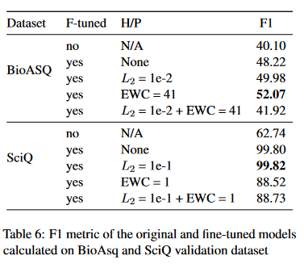

Exploring Catastrophic Forgetting for Question Answering Domain Adaptation in Text-to-Text Transformers
The Purpose
Catastrophic Forgetfulness occurs when Question-Answer (QA) systems, models are pre-trained on large, general source domain data and subsequently fine-tuned on target domain data. We want to research catastrophic forgetting in text-to-text transformer models and use regularization methods to alleviate any forgetting that occurs.
The Quest
A picture speaks a million words! The entire quest can be illustrated by
{kind=link}
To establish a baseline, we evaluated the source validation dataset of the UnifiedQA model using the model. The UnifiedQA model is publicaly avaliable and was developed by AllenAI. The UnifiedQA model uses was trained on 8 question-answer datasets of four different types as outlined by the image below. For each type of dataset, we need to us a different evaluation metric.
{kind=link}
Then, we fine-tuned the model using two different domain specific datasets called BioASQ and SciQ. These datasets were split into 80% training and 20% validation datasets. The training dataset was used for finetuning. The finetuning was done using TensorFlow for 5 epochs with an input length of 512 and a target length of 128. The small BioASQ dataset contained 3,743 records. It also consists of four types of questions. About a quarter of the questions are of the abstractive type, 20% are extractive (one word answer), a quarter are lists (answer consists of a list of items, can be seen as extractive), and close to 30% are yes/no. There are no multiple choice questions in this dataset. The SciQ dataset consists of 13,679 crowd-sourced science exam questions about Physics, Chemistry, and Biology, among others. The questions are in multiple-choice format. For the majority of the questions, an additional paragraph with supporting evidence for the correct answer is provided.
{kind=link}
Later, we applied regularization methods of L2 and Elastic Weight Consolidation (EWC), to see if it has an impact on alleiviating forgetfulness.
The Solution
As shown in the table below, we were able to establish catastrophic forgetfulness on a finetuned model and that adding regurlarization alleviated forgetfulness. We can see that without any finetuning, the model evaluated the RACE dataset with a String Similarity score of 58.24. However, finetuning with BioASQ resulted in catastrophic forgetting leading the performance to fall to 53.71. Adding the elastic weight consolidation, ensured the model recovered and actually performed better than it had without finetuning with a score of 58.59.
{kind=link}
We validated the models using the validation datasets of BioASQ and SciQ. As you can see the SciQ dataset performed very well. We postulate that catastrophic forgetting was more serious in SciQ than BioASQ. It seemed as though the fine-tuned model learned really well on SciQ but also forgot more of its source domain knowledge. One reason why the models learned SciQ well may be because the SciQ dataset was easier to be trained on. This was a multiple choice dataset with mean input length of 556 words and mean answer length of 11 words. The input consisted of a question, four options and a support sentence that supports the correct answer option. The answer could be easily found in the support sentence. Also, the dataset had 10,943 training examples, which is 3 times more than BioASQ. This may have allowed model to learn SciQ so well that regularizations did not help.
{kind=link}
The Impact
Overall, we notiched that catastrophic forgetfulness happens across all question-answer dataset types. Elastic Weight Conolidation was the better regularization method. However, L2 regularization also helped performance for the model finetuned on the SciQ data. Also the model with both the Elastic Weight Consolidation and L2 regularization didn't perform better than individual reuglarization methods.